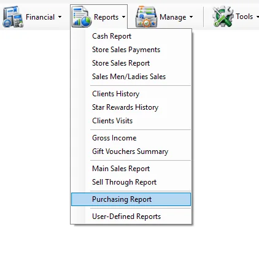
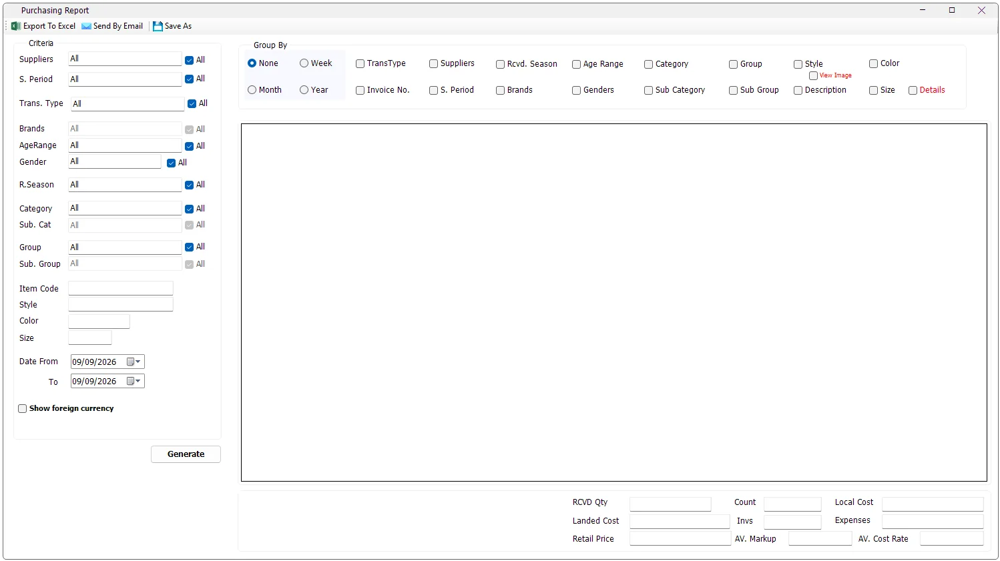

Buying
How much did we receive?
Filter by Supplier and date, then review RCVD Qty, Landed Cost and Local Cost.
The Purchasing Report analyzes merchandise receipts and purchase returns across a selected date range. It can be summarized or grouped by period, supplier, transaction type, invoice, merchandise hierarchy, style, color and other product attributes, with purchase-cost and retail-value KPIs.

While IMS is retrieving the report, Generate changes to Cancel. Click Cancel to stop the current report request.

Some IMS criteria fields open a compact multi-selection list instead of a normal drop-down. You can select several values without holding Ctrl.
| Field display | Meaning |
|---|---|
| All | All available values are included. If no individual item remains selected, IMS automatically returns the field to All. |
| One name | Exactly one value is selected. |
| Multi Selected | Two or more values are selected. |
| Criteria | What it does |
|---|---|
| Suppliers | Filters purchase movements to one or more suppliers. |
| S. Period | Filters by the statistical/selling period recorded on the purchase line. |
| Trans. Type | Filters the purchase transaction type. The available report transaction types are Purchase and Purchase Return. |
| Brands | Filters by brand. The brand list is enabled when one supplier is selected so IMS can load that supplier's brands. |
| AgeRange | Filters merchandise by age range. |
| Gender | Filters merchandise by gender classification. |
| R. Season | Filters by the merchandise received season stored on the item. |
| Category / Sub. Cat | Filters the main merchandise category and subcategory. |
| Group / Sub. Group | Filters the merchandise group and subgroup. |
| Item Code | Exact item-code filter. |
| Style | Contains search against the item style. |
| Color | Contains search against the item color code. |
| Size | Exact size filter. |
| Date From / To | Includes purchase movements whose invoice date falls within the selected range. |
Some criteria refresh according to another selection. Brand is loaded for a single selected supplier. Sub Category is refreshed from Category, and Sub Group is refreshed from Group. If the parent selection contains several values, IMS returns the child list to the broader available set.
Select Show foreign currency when you need the original purchase-currency values in addition to local and landed cost. IMS then separates the report by foreign-currency symbol and adds the foreign-cost and exchange-rate fields.
| Foreign-currency column | Meaning |
|---|---|
| FR Cost | Purchase value before local currency conversion and before landed-cost expenses, net of purchase returns. |
| FR Currency | The purchase currency symbol. |
| FR Exch | The weighted local-currency exchange rate represented by Local Cost ÷ FR Cost for the row. |
Group By defines how IMS separates the purchase totals into report rows. Multiple grouping options can be combined.
| Group By | Result |
|---|---|
| None | Returns the most consolidated view allowed by the selected criteria. |
| Week | Separates purchase activity by year and calendar week. |
| Month | Separates purchase activity by month and year. |
| Year | Separates purchase activity by year. |
| TransType | Separates Purchase from Purchase Return when more than one transaction type is included. |
| Invoice No. | Adds Cost Center, Invoice No. and Invoice Date and separates the result by invoice. |
| Suppliers | Separates rows by supplier when more than one supplier is included. |
| S. Period | Separates rows by the statistical/selling period on the purchase line. |
| Rcvd. Season | Separates rows by the merchandise received season stored on the item. |
| Brands | Separates rows by brand when multiple brands are included. |
| Age Range | Separates rows by age range. |
| Genders | Separates rows by gender. |
| Category / Sub Category | Separates rows by merchandise category hierarchy. |
| Group / Sub Group | Separates rows by merchandise group hierarchy. |
| Style | Separates rows by style. |
| Description | Separates rows by product description. |
| Color | Separates rows by Color Code. |
| Size | Separates rows by size. |
| Details | Adds item-level pricing and status information: Item Code, Barcode, Original Price, Current Price, Current Discount and State. |
Select Details for item-level analysis. IMS adds Item Code, Barcode, Orig. Price, Curr. Price, Curr Discount and the item's current State (Normal, Sale or Outlet).
| Column / total | Meaning in IMS |
|---|---|
| RCVD Qty | Net received quantity. Purchase returns reduce the quantity. |
| Landed Cost | Net purchase cost after applying the invoice cost rate. Purchase returns reduce the landed cost. |
| Retail Price | The report's retail-value total calculated from receipt quantity × current retail price. |
| Markup | For each report row: Retail Price ÷ Landed Cost. |
| FR Cost | Net foreign purchase cost before currency conversion. |
| Local Cost | Foreign purchase cost converted using the invoice currency-change rate. |
| Total Expenses | Landed Cost − Local Cost. |
| Cost Rate | Landed Cost ÷ FR Cost. |
| Invs Count | Count of distinct invoice numbers within each generated group. |
| Count | Number of rows in the generated report grid. |
The bottom summary shows RCVD Qty, Count, Local Cost, Landed Cost, Invs, Expenses, Retail Price, AV. Markup and AV. Cost Rate.
The summary values are recalculated from the generated rows. AV. Markup = total Retail Price ÷ total Local Cost, while AV. Cost Rate = total Landed Cost ÷ total FR Cost. Row Markup uses Landed Cost, including the reported expense allocation; bottom AV. Markup uses Local Cost before those expenses. They are different ratios, and AV. Markup is not an arithmetic average of the row Markup values.
The report includes transaction codes 1 and 2. Code 1 is treated as a purchase and code 2 as a purchase return. For received quantity and the cost fields, purchase returns are subtracted from purchases so the result represents net purchasing movement for the selected criteria and dates.
View Image loads item thumbnails into the generated report. The report must contain both Style and Color Code, because IMS creates the thumbnail lookup from those two values.
If the report contains more than 10,000 rows, IMS asks for confirmation before loading images. For Excel exports above 5,000 rows, IMS asks whether to export with images, export data only, or cancel.
Purchasing Report output follows the logged-in user's IMS access policy. Export To Excel and Send By Email can be hidden independently. If the user is not allowed to view COGS/cost information, IMS hides local cost, landed cost, expenses, markup, cost rate and the foreign-currency option.
| Action | Behavior |
|---|---|
| Export To Excel | Exports the generated Purchasing Report. Loaded thumbnails can also be included in the Excel file. |
| Send By Email | Sends the Purchasing Report with a subject containing the selected From and To dates. |
| Save As | Saves the generated report. IMS requires report data before this command can be used. |
Filter by Supplier and date, then review RCVD Qty, Landed Cost and Local Cost.
Select Purchase Return in Trans. Type and group by Supplier, Invoice No. or merchandise fields.
Group by Category, Group, Style or other merchandise dimensions and compare RCVD Qty and Retail Price.
Compare Local Cost, Expenses, Landed Cost, Cost Rate and Markup. Enable Show foreign currency when original-currency analysis is needed.
The Purchasing Report uses supplier and brand master data from Manage → Suppliers. Brands belong to suppliers, so selecting one supplier lets IMS load that supplier's applicable brands for purchasing analysis.
The Purchasing Report uses merchandise classifications from Manage → Items, including Item Code, Style, Color, Size, Description, Category hierarchy, Product Group hierarchy, Supplier, Brand, Age Range, Gender, received season and statistical period.
When product images are displayed or exported, IMS uses the Style/Color image maintained in the Item master rather than a separate image for each Size.
The report's merchandise classifications come from the same masters used by Manage → Items:
| Report field | IMS master |
|---|---|
| Category / Sub Category | Manage → Categories |
| Group / Sub Group | Manage → Product Groups |
| Age Range | Manage → Age Ranges |
| Gender | Manage → Genders |
| S. Period | Manage → Statistical Periods |